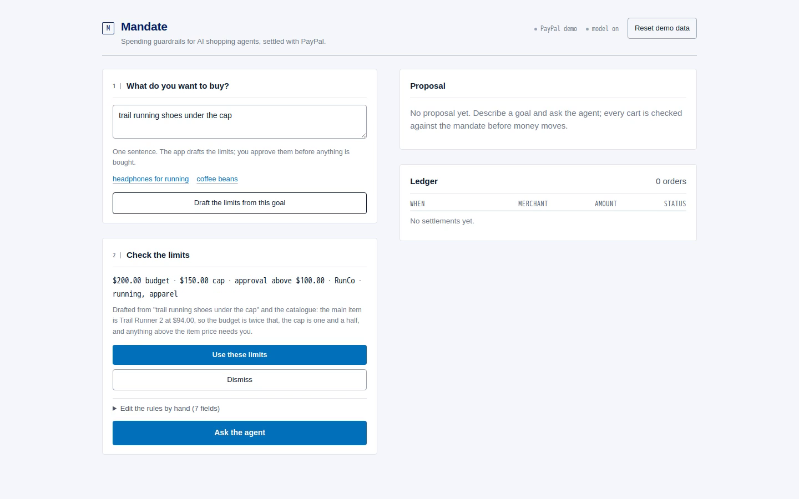
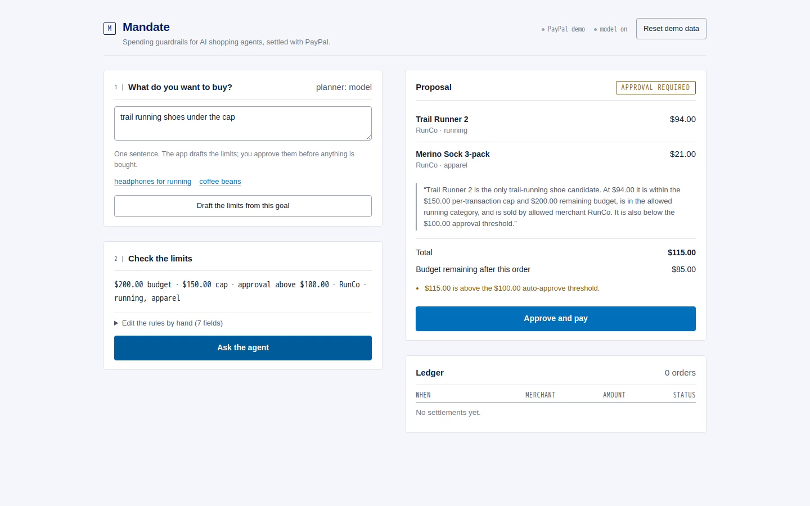
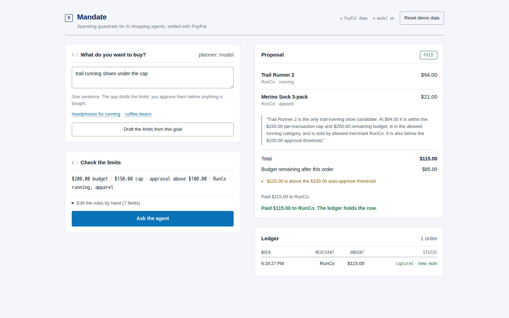

Spending guardrails for AI shopping agents, settled with PayPal.
The model proposes. The code disposes.
Give the agent a card and it can spend anywhere the card clears. The controls live at the bank: a monthly cap, maybe a merchant lock on a virtual card. Coarse, set elsewhere, invisible to the agent, and silent about this cart.
Withhold the card and the agent researches, compares and fills a basket — then hands the last step back to you, because you are not giving software your credential.
| Control | Where it lives |
|---|---|
| Monthly card limit | Issuer |
| Merchant lock | Virtual card |
| Per-cart rule with a reason | Mandate |
A person already writes these limits down — in a note on their phone, which the merchant ignores. Mandate makes them executable.
The audience: someone buying a specific, bounded thing — the week's groceries, school supplies, a replacement part — who will let an agent transact but will not hand over a blank card.
What they actually do: state the goal in one sentence. The app drafts the limits from the catalogue. They look at one line and approve it, or change one number. Seven fields exist, but nobody has to open them.
The demo shows the same flow at desktop size. The form is behind a disclosure because enforcement, not authoring, is the product.
The seven fields stay one click away for anyone who wants them, which is what makes the one-tap path honest.

intent: CAPTURE and integer-cent amounts.Sandbox is the environment. Demo mode is a branch at the PayPal boundary, not a mock of the app.
| Observed in sandbox | Value |
|---|---|
| Order created | 57874901BY376944J |
| Capture id | 5KT45525KN917902M |
| Captured before approval | 422 ORDER_NOT_APPROVED |
| Amount | 115.00 USD |
PayPal itself refused a premature capture. That refusal is the proof the integration is live.
engine — llm only when the model
really answered, heuristic when the fallback took over.| Governance in code | Where |
|---|---|
| Candidates pre-filtered by the mandate | agent.ts |
| SKUs validated against the catalogue | agent.ts |
| Prices come from the catalogue only | catalog.ts |
| Decision made by a pure function | policy.ts |
A model that invents a SKU falls back to the deterministic planner, and a test proves it.
evaluate(proposal, mandate, now) is pure: no I/O, no network, no wall-clock
read on the decision. It returns an outcome, totals, the remaining budget, and reasons
with codes and severities.
Checkout reloads the proposal and the mandate and runs it again, so a stale or forged
decision is impossible. A denied cart answers 409 denied_by_policy even when the
caller sends approved: true.
| over_budget | block |
| over_transaction_cap | block |
| merchant_blocked | block |
| category_not_allowed | block |
Audit needs a code, not a paragraph:
over_budget is greppable and storable with the order.

captured.
| Suite | Tests |
|---|---|
| Policy engine (cent boundaries, multi-reason denies) | 16 |
| HTTP API (approval gate, policy bypass) | 15 |
| Agent (model path, fallbacks, invented SKUs) | 12 |
| Catalogue search | 6 |
| PayPal client | 5 |
| Total | 54 |
Most agentic-commerce demos show an agent buying something. Mandate shows the moment before: a deterministic engine ruling on a cart, with reasons a person can read and a machine can store.
The novel part is not the model. It is that the model has no vote, and that the refusal survives being repeated, replayed or called directly.
Cart is $94.00 but only $85.00 remains.
A virtual card with a $200 limit cannot say that. A per-cart policy can, and it can say it again for the next cart.
git clone https://github.com/lgf2111/mandate
npm install && npm run dev
open http://localhost:5173
No credentials. Demo orders are simulated and labelled. With a PayPal sandbox app and
an LLM key in .env, the same build creates real Orders v2 orders and asks a real model.